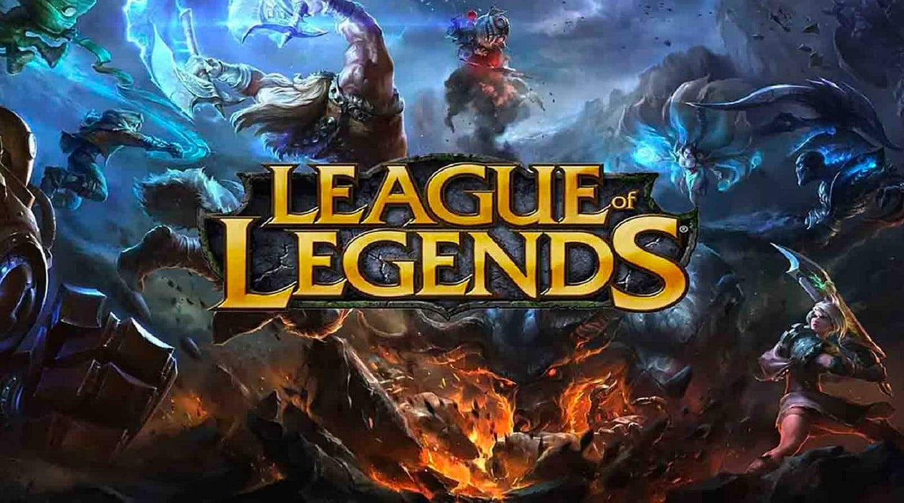

GAMES
-PUBG-MOBILE-

|
PUBG Mobile is a free-to-play battle royale video game developed by LightSpeed & Quantum Studio, a division of Tencent Games. It is a mobile game adaptation of PUBG: Battlegrounds. It was initially released for Android and iOS on 19 March 2018.
It was published by multiple publishers in different regions, including Krafton, Tencent, and VNG Games. By December 2022, PUBG Mobile had accumulated around 1.3 billion downloads while grossing over $9 billion. It is also the second most-played mobile video game of all time.[4] In 2021, the game spawned an Indian version, Battlegrounds Mobile India, and a separate game taking place in the PUBG Universe, called New State Mobile.
|
Gameplay
PUBG Mobile features gameplay similar to that of the original PlayerUnknown's Battlegrounds. Players parachute down to a remote island and fight to remain as the last player standing, competing alone or in teams of two or four, depending on the game mode selected before the match. Each match lasts about 30 minutes. It takes exactly 32 minutes and 50 seconds for the zone to close completely. After that, another 11 seconds or so until you die inside the zone, so potential max of about 33 minutes and 10 seconds if you try to heal yourself.
- VALORANT -

Valorant is a free-to-play first-person tactical hero shooter developed and published by Riot Games, for Windows. Teased under the codename Project A in October 2019, the game began a closed beta period with limited access on April 7, 2020, followed by a release on June 2, 2020. The development of the game started in 2014. Valorant takes inspiration from the Counter-Strike series, borrowing several mechanics such as the buy menu, spray patterns, and inaccuracy while moving.
Gameplay
Valorant is a team-based first-person tactical hero shooter set in the near future. Players play as one of a set of Agents, characters based on several countries and cultures around the world.In the main game mode, players are assigned to either the attacking or defending team with each team having five players on it. Agents have unique abilities, each requiring charges, as well as a unique ultimate ability that requires charging through kills, deaths, orbs, or objectives. Every player starts each round with a "classic" pistol and one or more "signature ability" charges. Other weapons and ability charges can be purchased using an in-game economic system that awards money based on the outcome of the previous round, any kills the player is responsible for, and any objectives completed.
- League Of Legends -
League of Legends (LoL), commonly referred to as League, is a 2009 multiplayer online battle arena video game developed and published by Riot Games. Inspired by Defense of the Ancients, a custom map for Warcraft III, Riot's founders sought to develop a stand-alone game in the same genre. Since its release in October 2009, League has been free-to-play and is monetized through purchasable character customization. The game is available for Microsoft Windows and macOS.
| 
|
Gameplay
League of Legends is a multiplayer online battle arena (MOBA) game in which the player controls a character ("champion") with a set of unique abilities from an isometric perspective. As of 2023, there are over 160 champions available to play. Over the course of a match, champions gain levels by accruing experience points (XP) through killing enemies. Items can be acquired to increase champions' strength, and are bought with gold, which players accrue passively over time and earn actively by defeating the opposing team's minions, champions, or defensive structures. In the main game mode, Summoner's Rift, items are purchased through a shop menu available to players only when their champion is in the team's base. Each match is discrete; levels and items do not transfer from one match to another.
- Call Of Duty -

Call of Duty is a video game series and media franchise published by Activision, starting in 2003. The games were first developed by Infinity Ward, then by Treyarch and Sledgehammer Games. Several spin-off and handheld games were made by other developers. The most recent title, Call of Duty: Modern Warfare III, was released on November 10, 2023.
The series originally focused on the World War II setting, with Infinity Ward developing Call of Duty (2003) and Call of Duty 2 (2005) and Treyarch developing Call of Duty 3 (2006). Call of Duty 4: Modern Warfare (2007) introduced a modern setting, and proved to be the breakthrough title for the series, creating the Modern Warfare sub-series; a Modern Warfare remastered version released in 2016.
Gameplay
Call of Duty is a first-person shooter video game based on id Tech 3, and was released on October 29, 2003. The game was developed by Infinity Ward and published by Activision. The game simulates the infantry and combined arms warfare of World War II.[68] An expansion pack, Call of Duty: United Offensive, was developed by Gray Matter Studios with contributions from Pi Studios and produced by Activision. The game follows American and British paratroopers and the Red Army. The Mac OS X version of the game was ported by Aspyr Media. In late 2004, the N-Gage version was developed by Nokia and published by Activision.